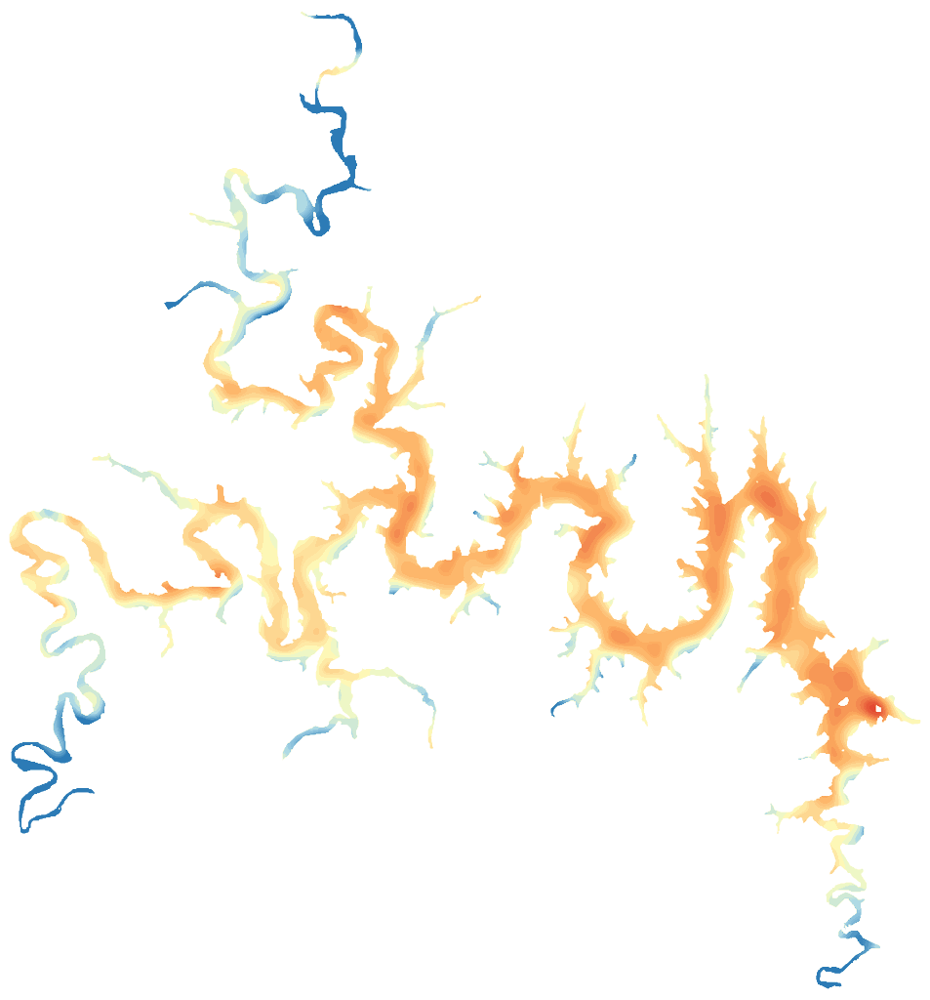

LakeScope › MO
Table Rock Lake today
Updated 2026-11-21 - Atlas Labs
Some algae possible, 61°F water, level falling, 6 ft below normal, calm this morning.
Water level
909.43 ft
U.S. Army Corps of Engineers - 2026-11-21
7-day trend: falling (-0.33 ft). Compared with normal for this date: -6.2 ft (same weeks, 2016-2025).
Water clarity and algae
Some algae possible Last clear view: about a week ago. 1 cloudy pass since.
Surface temperature
61°F
seen from space on 2026-11-19

Ice
Open - 0% ice cover
Estimate from weather and satellite, not a measurement. Check the ice yourself before going on it.
Weather, next 3 days
| Day | Sky | High / low | Wind | Rain |
|---|---|---|---|---|
| Saturday | Sunny | 73 / 54°F | 10 mph SE | 0% |
| Sunday | Rain Showers then Mostly Cloudy | 61 / 32°F | 15 mph NW | 82% |
| Monday | Sunny | 53 / 27°F | 7 mph N | 0% |
Sunrise 06:57 - sunset 17:01 - Waxing gibbous. National Weather Service.
Get the LakeScope app: alerts and the 3-D view of Table Rock Lake